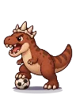
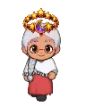

Wiki › Itens › Baús, fichas e troféus › Baú da Torre

Baú da Torre
Bebida / poção Nível 400 Incomum
Abra para 3 prêmios sorteados: poções, cristais de foco, banquetes, tostões, fichas, materiais das relíquias... e, raramente, uma peça de equipamento do Multiverso.
- Tipo
- Bebida / poção
- Nível
- 400
- Raridade
- Incomum
De onde vem
Quem deixa cair (1)
| Adversário | Nível | QuantidadeQtd. | Chance | Onde |
|---|---|---|---|---|
 Rei Rex, o Devorador de Bolas Chefão | 700 | 1–2 | 100% | 👑 Arena do Rei Rex |
Prêmio das missões
- 📜 O amuleto da sorte (Nível 480)
- 👑 O Rei Rex (Nível 695)
- 📜 O maior desafio (Nível 950)
Trocas
- 1x ← Troque 12 Fichas da Torre com Mestra Altina, da Torre Infinita

Mestra Altina, da Torre Infinita — troca 12 Fichas da Torre por um Baú da Torre